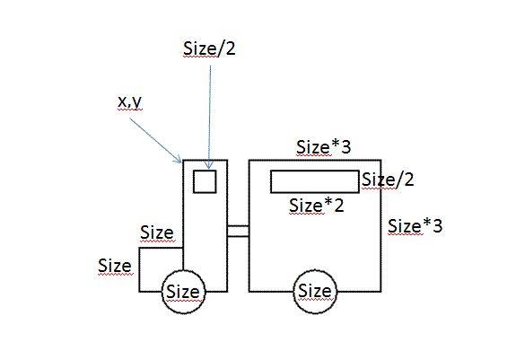
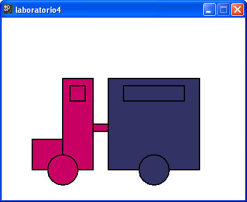
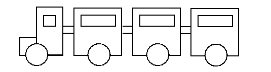

1. Desarrolla un programa que realice el siguiente dibujo. El programa deberá tener 3 variables:
x. Posición en x de la esquina superior izquierda de la locomotora.
y. Posición en y de la esquina superior izquierda de la locomotora.
size. Variable que nos servirá para el manejo de las proporciones (recuerda que en el código no puedes nombrarla size, ya que es una palabra reversada).
NOTA: Primero desarrolla el código necesario para desplegar la locomotora. Revisa que se dibuja correctamente. Después desarrolla el código para el vagón. Algunos tamaños y posiciones debes deducirlos del dibujo.

2. Realiza las modificaciones necesarias, para que el tren de la sección anterior, se muestre coloreado. Para este caso es necesario utilizar variables que permitan definir los colores simplemente cambiando sus valores en la inicialización.
Es decir que se deben declarar 2 variables de tipo color, una para la locomotora y otra para el vagón.
Por ejemplo, para lograr el siguiente dibujo se inicializaron las variables con los siguiente valores:
color colorLocomotora = color(200,0,100); //
Rosa mexicano
color colorVagon = color(50,50,100); // Morado

3. Agrega una variable opción al programa para que mediante el uso de un switch, podamos indicar que dibujo queremos visualizar.
opción 1 --- Tren blanco y negro
opcion 2 --- Tren a color
Sección de ejercicios opcionales
4. ¿Qué tendrías que hacer si deseas dibujar un Tren con 3, 4 o más vagones? Modifica tu código para hacer el siguiente dibujo:

Si lo consideras adecuado, puedes definir métodos y usar ciclos para facilitar esta tarea (avanzados). Para los demás, se puede solucionar de la manera convencional sin problema alguno.